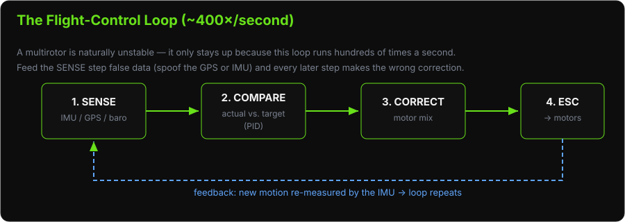
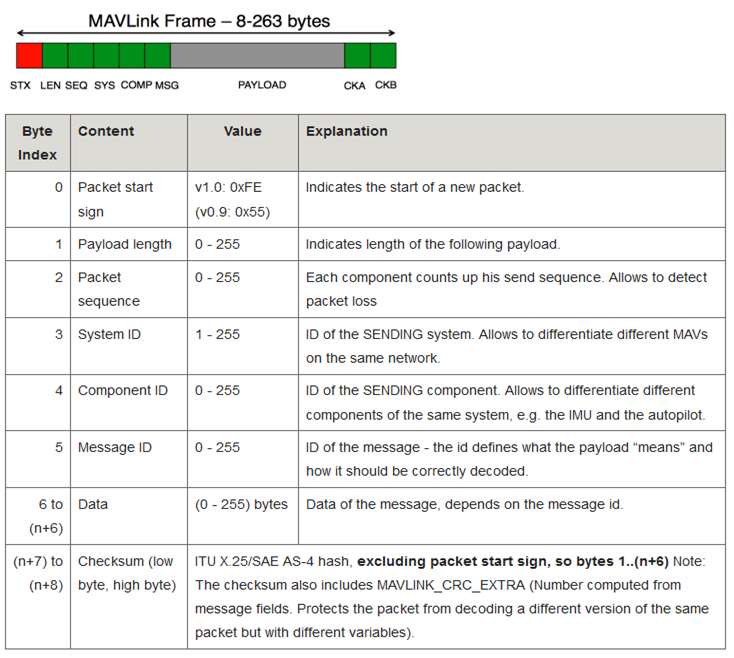

PRESENTATION30 minutes
Day 1 – UAV & Drone
Hack Our Drone Workshop — Dark Wolf Solutions
The flight controller (FC) is the embedded computer that:
Reads sensor data (IMU, GPS, barometer, compass)
Runs control loops to keep the aircraft stable
Interprets pilot input (RC) or autonomous mission commands
Outputs motor speeds via ESC
Communicates with the GCS via MAVLink
What is a "control loop"? A multirotor is naturally unstable — it wants to tip over. Many times per second the FC compares where the drone is pointing (from the IMU) to where it should be pointing, then nudges each motor to correct the difference. That fast measure-compare-correct cycle is a PID loop. Steps 1→4 above repeat roughly 400 times every second.

The FC is the root of trust for the drone. If the FC is compromised, the drone is compromised — which is why so much of this course circles back to it.
Open source autopilot – ardupilot.org
Community-developed since 2009
Supported vehicle types: copter, plane, rover, submarine, antenna tracker
Supported hardware: Pixhawk 1/2/3/4/6, Cube Orange, SpeedyBee, Matek, and 100+
OS: NuttX RTOS (on hardware) or Linux (companion)
GCS: Mission Planner (Windows), QGroundControl (cross-platform), MAVProxy (CLI)
Key features:
Fully configurable via MAVLink parameters
Supports scripting with Lua
Active community forums (discuss.ardupilot.org)
Variants:
ArduCopter – multirotor
ArduPlane – fixed wing
ArduRover – ground vehicles
ArduSub – underwater vehicles
Open source autopilot – px4.io
Professionally maintained, Dronecode Foundation
Emphasis on commercial and industrial applications
Supported hardware: Pixhawk 4/5/6, Holybro, Auterion
OS: NuttX RTOS (on hardware) or Linux
GCS: QGroundControl (primary)
Key differences from ArduPilot:
More modular architecture (uORB message bus)
Log format: ULog (.ulg files)
More rigorous code quality and CI standards
PX4 is the preferred autopilot for commercial drone manufacturers
MAVLink (Micro Air Vehicle Link) is the lightweight messaging protocol connecting the flight controller to the GCS and companion computer.

Characteristics:
Header-based binary protocol
Each message has: System ID, Component ID, Message ID, Payload, Checksum
Runs over: serial (UART), UDP, TCP
Default ports: UDP 14550 (GCS), UDP 14551 (secondary)
| Message | Direction | Purpose |
|---|---|---|
| HEARTBEAT | Both | Keep-alive, vehicle type |
| ATTITUDE | FC → GCS | Roll, pitch, yaw |
| GLOBAL_POSITION_INT | FC → GCS | GPS lat/lon/alt |
| RC_CHANNELS | FC → GCS | RC input values |
| COMMAND_LONG | GCS → FC | Send command (arm, takeoff, RTL) |
| MISSION_ITEM | GCS → FC | Upload waypoint |
| PARAM_SET | GCS → FC | Change a parameter |
v1: no authentication, no encryption
v2: optional message signing (HMAC-SHA256), but rarely deployed
Any device on the same network can send commands
Flight controllers support multiple operating modes:
| Mode | Description |
|---|---|
| Stabilize | Pilot controls attitude directly |
| AltHold | Autopilot holds altitude; pilot controls position |
| Loiter | Autopilot holds position and altitude |
| Auto | Executes pre-loaded mission plan |
| RTL | Return to launch/home location |
| Land | Autonomous landing |
| Guided | GCS sends real-time position/velocity targets |
| Acro | Rate-based control for aerobatics |
Flight controllers expose hundreds of configurable parameters that control every aspect of flight behavior. Think of them as the drone's settings menu — except the whole menu is exposed over MAVLink, and by default anyone on the link can read and change it.
A parameter is just a name/value pair (e.g. FENCE_RADIUS = 300). ArduPilot has ~1,200 of them. The security problem is not any single value — it is that the entire configuration is remotely writable without a password.
# Examples of critical parameters:
ARMING_CHECK # Which pre-arm safety checks to perform
FS_THR_ENABLE # Throttle failsafe (what to do if RC lost)
FS_GCS_ENABLE # GCS failsafe (what to do if telemetry lost)
WPNAV_SPEED # Waypoint navigation speed
FENCE_ENABLE # Geofence enforcement
FENCE_RADIUS # Geofence boundary
BRD_SAFETYENABLE # Hardware safety switch
Reading parameters:
# Via MAVProxy
mavproxy.py --master=udp:10.1.1.10:14550
param show FS_*
param show ARMING*
Cybersecurity: Parameters can be read and written with no authentication. An attacker can disable failsafes, expand geofences, or reduce arming checks.
| Topic | Key Point |
|---|---|
| ArduPilot | Open source, broad community, used in 3DR Solo |
| PX4 | Open source, commercial focus |
| MAVLink | No authentication by default — a critical weakness |
| Parameters | Readable and writable over the network — attack surface |
| Modes | Switchable remotely — attacker can hijack flight mode |